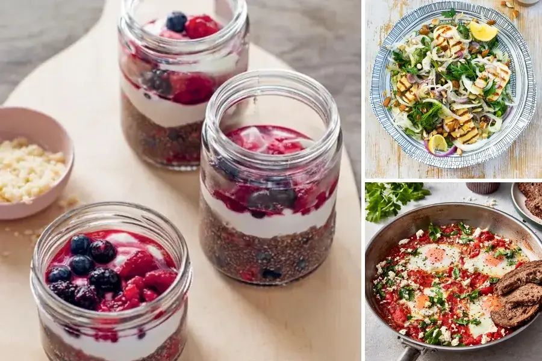

Our weekly meal plan
Grocery List
Any day

Iron-Rich Breakfast Jars
9 Ingredients · 15 min
Monday 13 Jan
Tuesday 14 Jan
Wednesday 15 Jan
Thursday 16 Jan
Friday 17 Jan
Saturday 18 Jan
Sunday 19 Jan

Crispy Chicken Caesar Salad
View recipe